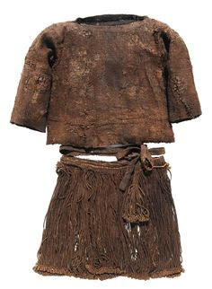
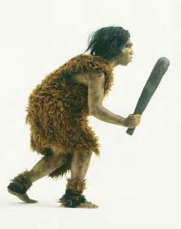

When did it all begin?
 A 2011 study on lice suggested that it was only 170,000 years ago when it all began. Researchers found that heda lice and lice that live in our clothes appeared at around this time. The idea is that, once we started wearing clothes, some lice started living in them and evolved into a separate species.
A 2011 study on lice suggested that it was only 170,000 years ago when it all began. Researchers found that heda lice and lice that live in our clothes appeared at around this time. The idea is that, once we started wearing clothes, some lice started living in them and evolved into a separate species.
Why Clothing?
At this time , our own species, homo sapiens already walked the Earth in Africa. They no longer had much body hair, which had helped more archaic hominins keep warm at night and offered some protection from the heat of the sun. It is possible we started wearing clothes to compensate for the losss of fur.
A brief timeline...
First evidence of a sewing needle is found dated back to 28,000 BC.
We have proofs indicating cultivation of flax ranging around 8,000 BC.
Around 5000-6000 BC , we have enough evidence indicating that woven textiles were being used to wrap the dead, while production of linen fabric had started in Ancient Egypt.
A major event in this series of developments was the cultivation of cotton by the inhabitants of indus valley civilisation around 2500 BC.